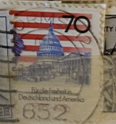
| SOURCE | TITLE| IMAGE MATCH | click to source page |
| Mystic Stamp | 2114 - 1985 22c Flag Over Capitol - Mystic Stamp Company | 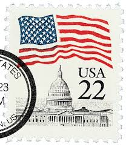 |
| eBay | US #1590A 1623Be 9¢ Capitol Dome Perf 10 VF Used | eBay | 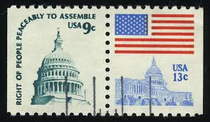 |
| eBay | USA - 1975 Americana Issue - Capitol Dome #2 | eBay | 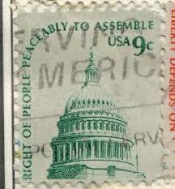 |
| Amazon.com | Amazon.com: U.S. 1738C II yd unmounted Mint/Never hinged ** MNH 1985 Flags (Stamps for Collectors) Flags/Coats of Arms/Maps : Toys & Games | 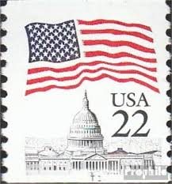 |
| Mystic Stamp Company | 2115f - 1985 22c Flag over Capitol, Imperf. Error - Mystic Stamp Company | 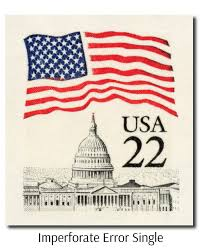 |
| Mystic Stamp | 1623 - 1977 13c Flag Over Capitol - Mystic Stamp Company | 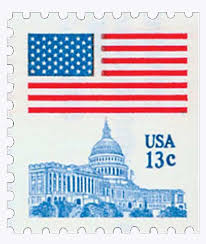 |
| Mystic Stamp | 1622 - 1975 13c Flag Over Independence Hall, Perf. 11 x 10 3/4 - Mystic Stamp Company | 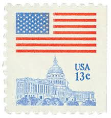 |
| Etsy | USA Flag Cufflinks, Americana, Patriotic Wedding Gift for Groom - Etsy | 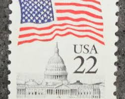 |
| Mystic Stamp Company | 1590,1623 - 1977 9c Capitol Dome & 13c Flag - Mystic Stamp Company | 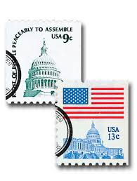 |
| eBay | UNITED STATES 2114 - Flag over US Capitol (pb49821) | eBay | 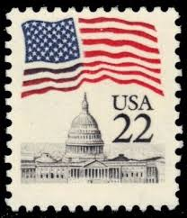 |
| eBay | US #1895 20c Flag over Supreme Court & #1591 9c Dome of Capitol Used Perfins | eBay | 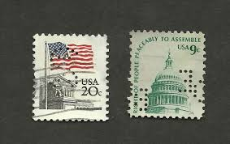 |
| ThriftTank | 4 USA STAMPS - 2¢ Locomotive 1870s, 1¢ Omnibus 1880s, 22¢ Capitol Dome | 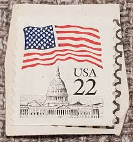 |
| eBay | USA3 #2115c MNH Flag over Capitol | eBay | 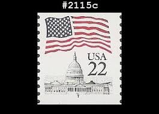 |
| Todocolección | estados unidos - flora - agave americana. - Buy Antique stamps of United States on todocoleccion | 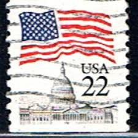 |
| eBay | Fleetwood 1994 U.S. Capitol Coin First Day Cover | eBay | 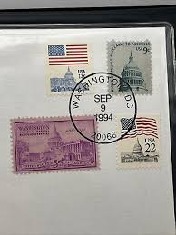 |
| eBay | STAMP US SCOTT 1623 from BK131 "Flag Over Capitol" 13 CENT 1977 MNH | eBay | 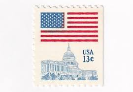 |
| eBay | USA - 1985 - Flag over Capitol - 22¢ - #3718 | eBay | 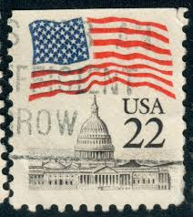 |
| eBay | US # 2115 *MINT OG NH* { MISPERF ERROR PAIR } EFO 22c FLAG OVER CAPITOL OF 1985 | eBay | 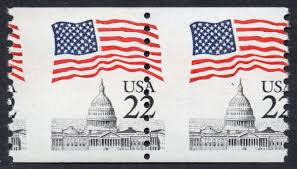 |
| eBay | 1985 US stamp booklet: Stamp 5X22c; BK144; MNH; Face value=$1.1 | eBay | 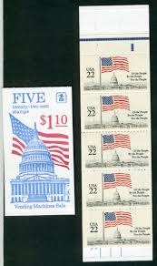 |
| eBay | US #1590A 9¢ Capitol Dome Scarce Perf 10 VF Used | eBay | 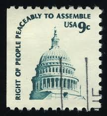 |
| eBay | USA5 #2115a MNH PNC3 Pl # 3 Flag over Capitol | eBay | 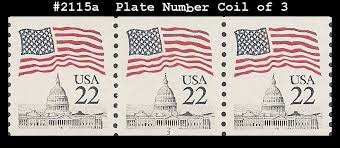 |
| eBay | Test Stamp Scott TDB32 complete booklet, mint, VF | eBay | 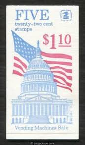 |
| eBay | 1977USA #1623 13c Flag Over Capitol - Booklet Single Mint NH | eBay | 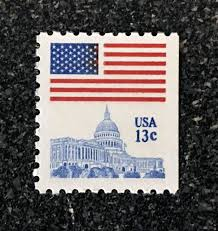 |
| eBay | 1977 9c Flag Over Capitol and 13c Capitol Dome, booklet of 8 stamps U.S. #1623a | eBay | 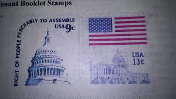 |
| eBay | US. #2116a Flag Over Capital Booklet Pane of 5 - OGNH - VF - CV$2.50 (ESP#532) | eBay | 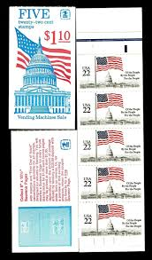 |
| Etsy | Buy 10x FLAG Over Capitol 1985 22c Unused Vintage Postage Stamps Free Shipping! #1 Source the Best Prices on Vintage Postage Stamp Online in India - Etsy | 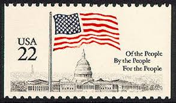 |
| Mystic Stamp Company | 1510b - 1973 10c Jefferson Memorial, Booklet Pane of 5 with Label - Mystic Stamp Company | 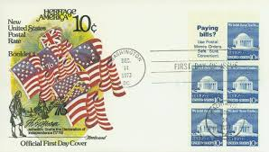 |
| eBay | US, #1623 50 star Flag over Capitol Hall booklet pair, 2 13c MNH | eBay | 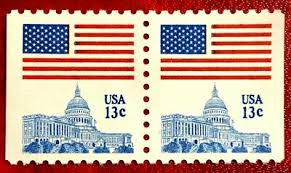 |
| eBay | STAMP SCOTT 2116 "Flag Over Capitol" 22 CENT 1985 USED FANCY CANCEL | eBay | 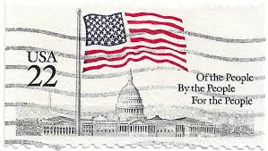 |
| Free stamp catalogue | Stamp 1985, United States of America Flag, capitol 1v, 1985 - Collecting Stamps - Freestampcatalogue.com - The free online stampcatalogue with over 500.000 stamps listed. | 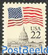 |
| eBay | 2115 22c Flag over Capitol - PNC1 - Pl# 16 - Used - see scan | eBay | 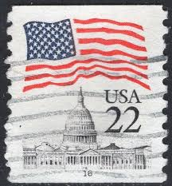 |
| Etsy | 1977 US Vintage Stamp Booklet: 13c Flag Over Capitol, MNH - Etsy | 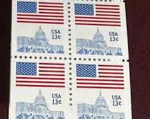 |
| eBay | United States USA Postage Stamp 9 Cents Right Of People Peaceably To Assemble | eBay | 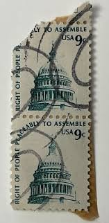 |
| eBay | SCOTT # 2115 PNC3, CHOOSE YOUR PLATE NUMBER, USED, GREAT PRICE! | eBay | 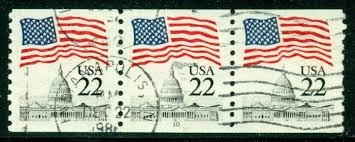 |
| eBay | U.S. Postage ~ Paul Dudley White M.D. 3¢/US Flag w/Capitol 22¢ ~ Posted ~ c.1986 | eBay | 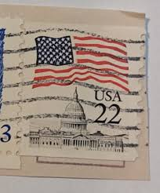 |
| eBay | 2115 22c Flag Over Capitol-Coil Pair, Erie Blue, Mint **ANY 5=FREE SHIPPING** | eBay | 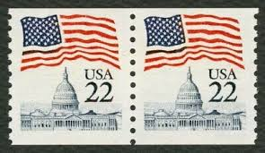 |
| eBay | Perfectly Flawed EFO SN 2115f MNH Error - Flag & Capital - Tag Shift Imperf Pair | eBay | 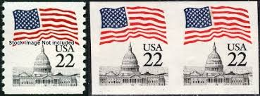 |
| eBay | US FDC # 2116a 22c Large Flag Gill pane 1985, 9p5433 | eBay | 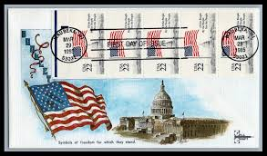 |
| eBay | 5/1103 US Stamp Scott #1591 Rare Missing 9c +Double Misperf Errors MNHOG Gr. EFO | eBay | 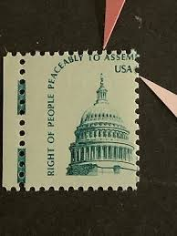 |
| 4StampSales | US Stamp 1985 22c Statue of Liberty Sculptor Bartholdi 4 Stamp Pl Blk #2147 | 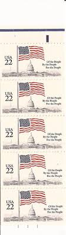 |
| eBay | US Stamp Scott# 1623a Flag over Capitol 1977 BK 132 MNH Stock Picture C427 | eBay | 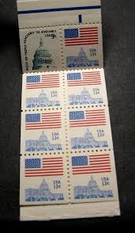 |
| eBay | USPS 1987-88 MINT SET OF DEFINITIVE STAMPS & BOOK | eBay | 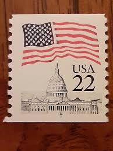 |
| eBay | 2116a 1985 22-cent Flag over Capitol booklet of 10 Mint - Never Hinged | eBay | 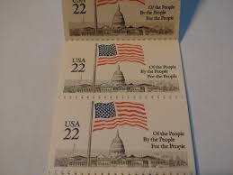 |
| eBay | 1510d 10c Jefferson Memorial - Fleetwood FDC Booklet Pane of 6 | eBay | 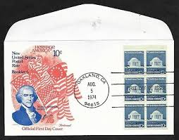 |
| Mystic Stamp Company | 1510 - 1973 10c Jefferson Memorial - Mystic Stamp Company | 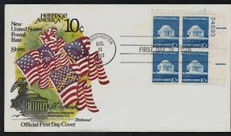 |
| eBay | SCOTT # 2115 PLATE # SINGLE, USED, PLATE #'s 1, 5, & 18, 3 STAMPS, GREAT PRICE! | eBay | 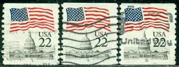 |
| eBay | US Scott # 2116 - MNH - Pair - Shiny Gum | eBay | 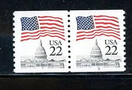 |
| Todocolección | sello - stamp - usa - 22 c - flag over capitol - Buy Antique stamps of United States on todocoleccion | 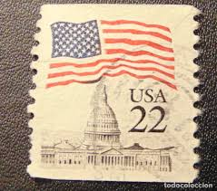 |
| eBay | US:IMPERFORATE ERROR: 22c FLAG over CAPITOL (2115f) plate #19 strip of 5 CV $450 | eBay | 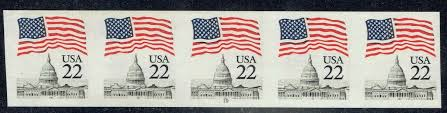 |
| eBay | Scott #1623...13 Cent...Flag Over Capitol...Booklet..7 x 13 Cent + 1 x 9 Cent | eBay | |
| eBay | US Stamp Scott #2115, 22c, Flag Over Capitol, Coil Strip of 3, OG, MNH | eBay | |
| eBay | US. 2115. 22c. Flag. 2115a. Narrow Block Tagging. PNC5 P#1, MNH. 1985 | eBay | |
| eBay | SC#2114 - 22c Flag Over Capitol Dome Plate Block of 4 MNH P#1 LL | eBay | |
| eBay | Lot of 5x Plate Blocks of 4 22c Stamps Sc 2110 Performing Arts & 2114 Capitol | eBay | |
| eBay | US #2115f, 22¢ Flag Over Capitol, Imperf Miscut Error Plate #18 Strip of 4 NH | eBay | |
| eBay | USA, SCOTT # 2115A, OFF-CENTER STRIP OF 5 PNC #12 FLAG OVER CAPITOL DOME, MNH | eBay | |
| eBay | FLAG OVER THE CAPITOL BUILDING STARS & STRIPES PLATE#BLOCK 1985 ARTMASTER FDC UN | eBay | |
| eBay | USA1985 #2115 22c Flag Over Capitol Dome Plate Number Coil Mint NH PNC #17 | eBay | |
| eBay | US NAVY BURIAL AT SEA US FLAG Coil Stamps Fleetwood FDC C9351 | eBay |